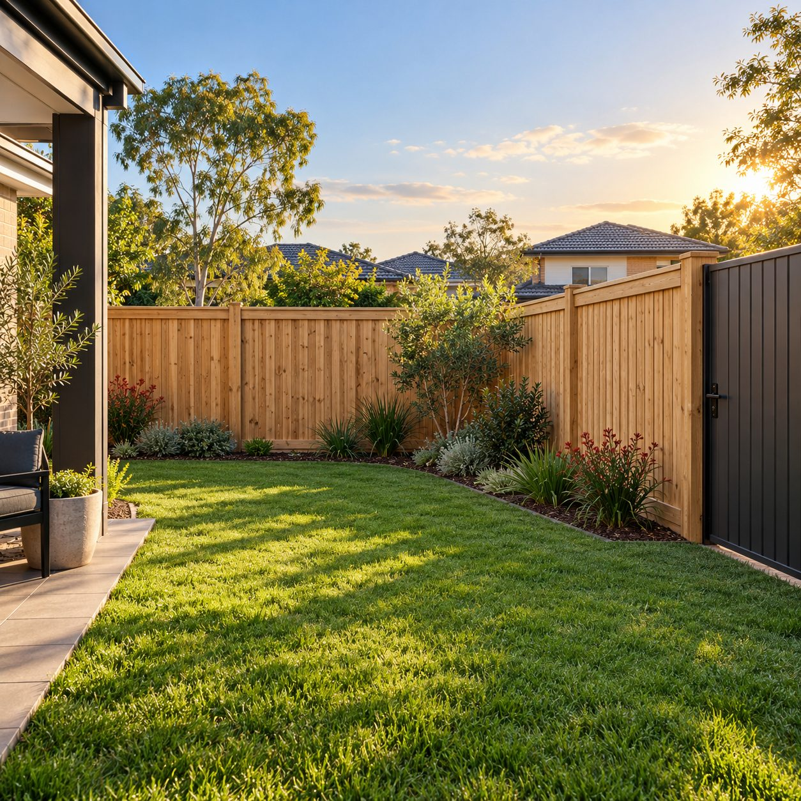

Timber fencing
A natural look for your boundary, with the privacy you want for your home and garden.
Discuss timber fencingYOUR LOCAL FENCING & LANDSCAPING TEAM
A little more privacy. A proper boundary. An outdoor space that feels like yours. Let’s bring it together.

01 / WHAT WE DO
A new fence, a practical gate or plans for the garden. Start with what you need, and we’ll talk through the options for your place.
A natural look for your boundary, with the privacy you want for your home and garden.
Discuss timber fencingClean lines and a practical finish. Explore metal fencing options that suit your property.
Discuss metal fencingMake getting in and out easier, with a gate that works with your fence and the way you use your space.
Discuss a gateHave something in mind for your outdoor space? Share your ideas and ask how we can help.
Discuss your garden02 / A LOOK AT OUR WORK
03 / CLOSE TO HOME
It’s more than a fence. It’s the backdrop to your home.
We’re Taylors Hill Fencing and Landscaping, serving Taylors Hill and surrounding areas with domestic timber, steel and aluminium fencing and gates.
Whether you’re starting with a new boundary or making a change to your existing outdoor space, we’re here to talk it through.
Tell us your suburb when you enquire, so we can confirm we service your address.
04 / LET’S GET STARTED
Send your suburb, a few photos and a rough idea of the job. Starting from scratch? That’s fine too.
Discuss the materials, access and scope, and arrange the next step for an accurate quote.
Once you’re happy with the quote, confirm the details and agree on a time for the work.
A FEW COMMON QUESTIONS
We work with domestic timber, steel and aluminium fencing and gates. Tell us the look and level of privacy you have in mind, and we can discuss suitable options.
We serve Taylors Hill and surrounding areas. Include your suburb in your enquiry so we can confirm your location before arranging a visit.
Your suburb, the type of job, approximate fence length or area if you know it, and whether there’s an existing fence to consider. Photos of the site are helpful too.
Yes. Text photos to 0402 064 931 or attach them to your email. Include a short description so we know what you’re planning.
YOUR NEXT PROJECT STARTS HERE
Tell us a little about your place and what you’d like to do. We’ll take it from there.
0402 064 931thefence@y7mail.com